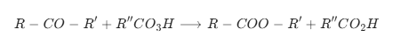
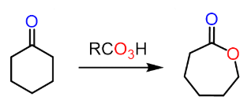
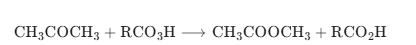
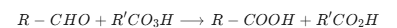
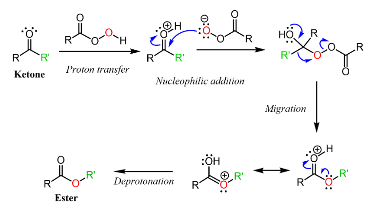
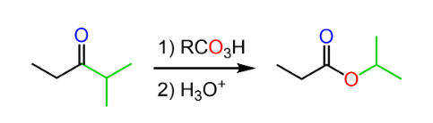
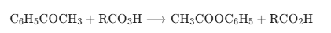

Baeyer–Villiger oxidation is an important organic reaction in which ketones (or aldehydes) are oxidized to esters (or carboxylic acids) using peroxy acids such as mCPBA. In this reaction, an oxygen atom is inserted adjacent to the carbonyl group.
Ketone + Peroxy acid → Ester + Carboxylic acid

Cyclohexanone reacts with peracid to form ε-caprolactone.

Acetone gives methyl acetate after oxidation.

Aldehydes undergo oxidation to give carboxylic acids.

Going from a ketone to an ester is an oxidation process, but we mentioned that the mechanism of Baeyer-Villiger is different from what we saw in conventional reactions using PCC, KMnO4, etc.
It is a rearrangement reaction where a tetrahedral peroxy intermediate undergoes a familiar 1,2-shift, thus forming the R-O alkoxy component of the ester.
The first step of the reaction is the activation of the carbonyl group via protonation by the acid, followed by a nucleophilic attack by the peroxycarboxylate ion, which leads to the aforementioned
intermediate capable of a rearrangement via 1,2-alkyl shift (migration):

In the mechanism above, we have labeled the carbon chains as R and R', so how do we know which of these is going to migrate and make the new C-O bond?
This is defined by the migratory aptitude of the alkyl groups connected to the carbonyl. The order of migratory aptitude of different groups is as follows:
H >tertiary>secondary>aryl>primary>methyl
For example,
<1>we can use the Baeyer-Villiger Oxidations to convert ethyl isopropyl ketone (2-methyl-pentan-3-one) to isopropyl propionate:


<